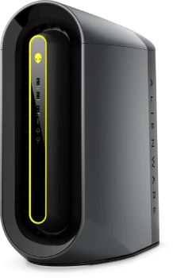
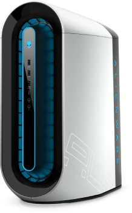
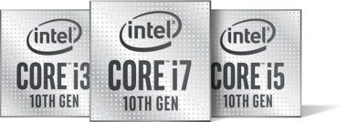

PRODUCTOS DISPONIBLES!
 | ALIENWARE AURORA RYZEN™ R10 |
|---|
| Sobremesa de alto rendimiento con procesadores AMD Ryzen™ de 3.ª generación sobreacelerables con hasta 16 núcleos, diseñados para los jugadores que crean. |
| Hasta AMD Ryzen™ 9 3950X (16 núcleos, caché L3 de 64 MB, sobreaceleración máxima de 4,7 GHz) |
| Windows 10 Home | Hasta NVIDIA® GeForce RTX™ 2080 Ti con GDDR6 de 11 GB (compatible con OC)*Disponible en mayo 2020 |
| Hasta 64 GB de memoria HyperX™ FURY DDR4 XMP de doble canal a 3200 MHz |
| Hasta SSD NVMe PCIe M.2 de 2 TB (arranque) + SATA de 2 TB a 6 Gb/s a 7200 rpm (almacenamiento) |
Disponible en 2 colores:
|
| ALIENWARE AURORA R11 |
|---|
| El nuevo Alienware Aurora está diseñado con la 10.ª generación de procesadores Intel® Core™, una tarjeta gráfica de refrigeración líquida opcional y varias opciones de actualización para mantener el máximo rendimiento durante más tiempo. |
| Procesador Intel® Core™ i9-10900KF de hasta 10ᵐᵃ generación (10 núcleos, 20 MB de caché, hasta 5,3 GHz con Thermal Velocity Boost) |
| Windows 10 Home | Hasta NVIDIA® GeForce RTX™ 2080 Ti dual, GDDR6 de 11 GB en cada una (compatible con NVIDIA® NVLink SLI) (preparada para OC) |
| Hasta 64 GB de memoria DDR4 HyperX™ FURY XMP de doble canal a 3200 MHz |
| Hasta SSD NVMe PCIe M.2 de 2 TB (arranque) + SATA de 2 TB a 6 Gb/s a 7200 rpm (almacenamiento) |
Disponible en 2 colores:
|
ENTRE EN OTRA DIMENSIÓN
Un procesador Intel® Core™ de 10ª generación ayuda a mantenerse en cabeza en el mundo digital. Consiga un gran avance en rendimiento, disfrute unos juegos y una creación de contenido intensos, y sumérjase en el entretenimiento de la tecnología de vanguardia 4K UHD.
